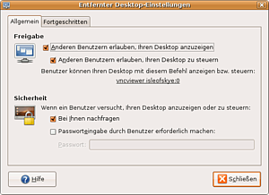
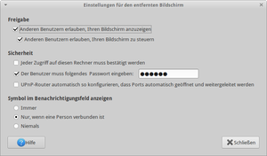
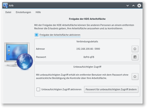
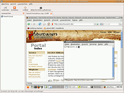
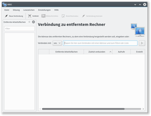
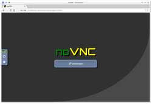
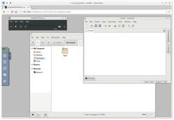

VNC
Zum Verständnis dieses Artikels sind folgende Seiten hilfreich:
Mit VNC kann ein entfernter Rechner bedient werden. VNC ist die Abkürzung für Virtual Network Computing und basiert auf dem RFB-Protokoll. Praktisch wird der Bildschirminhalt eines anderen Rechners auf dem lokalen Rechner angezeigt. Maus- und Tastatureingaben werden vom lokalen Rechner (hier läuft der Client, auch Viewer genannt) zurück an den entfernten Rechner (dort auf dem Host läuft der VNC-Server) gesendet.
Es existieren zwei unterschiedliche Konzepte für VNC-Server. Der übliche Server (z.B. x11vnc) bietet den tatsächlichen Bildschirm des Host-Rechners zur Anwenderunterstützung an. Weil am entfernten Rechner Tastatur und Maus benutzbar bleiben, ist eine Absprache empfehlenswert. Eine zweite Gruppe von Server-Programmen (z.B. tightvnc) ermöglicht die Benutzeranmeldung an virtuelle Sitzungen, ähnlich dem Terminalserver-Konzept.
Server- und Viewer-Programme für VNC gibt es für alle gängigen Betriebssysteme. Daher werden viele IT-Dienstleistungen mit VNC durchgeführt. Ähnliche Einsatzzwecke haben der proprietäre TeamViewer, RDP und der NX-Nachfolger X2Go.
Es gibt drei verschiedene Wege, um die Verbindung zwischen den Rechnern aufzubauen:
Beim traditionellen Weg lauscht der VNC-Server auf TCP-Port
5900. Er bietet dort sein Display0an. Weitere Displays können über zusätzliche Ports angeboten werden. Diese sind meistens590n, wobeindie Displaynummer ist. Falls der Host hinter einer Firewall (z.B. einem Hardware-Router) erreichbar sein soll, müsste der auf den entsprechende TCP-Port weitergeleitet werden. Bei von außen (= über das Internet) erreichbaren Rechnern wäre dies ohne verschlüsselte Verbindung grob fahrlässig. Für die einfache Anwenderunterstützung ist dieser Weg daher nicht zu empfehlen.Beim umgekehrten Weg lauscht der Client auf eingehende Anfragen von hilfsbedürftigen Anwendern. Diese Benutzer starten dazu einen VNC-Server, der sich dann mit dem wartenden Client auf TCP-Port
5500verbindet. Für solche Reverse-Connections muss die IP-Nummer oder der Hostname des Client-Rechners bekannt sein. Die Programme Gitso und UVNC SC (nur für Windows) unterstützen diesen Verbindungsweg.Beim indirekten Weg verbinden sich sowohl Server als auch Client zu einem dritten, offen erreichbaren Rechner. Dieser stellt dann die Verbindung her.
Achtung!
VNC-Verbindungen sind grundsätzlich unverschlüsselt! Sämtliche Passwörter werden im Klartext übertragen. Am Ende des Artikels wird beschrieben, wie man VNC-Verbindungen mit SSH oder VPN absichern kann.
Server¶
Das Server-Programm läuft auf dem Host-Rechner, auf dessen Desktop zugegriffen werden soll. Hierbei handelt es sich also um den Hilfesuchenden. Einige Distributionen bieten vorinstallierte VNC-Server an. Deren Einrichtung ist im nächsten Abschnitt beschrieben.
Server einrichten¶
 
Unity/GNOME¶
GNOME bringt das Programm Vino  als VNC-Server mit. Dieses bietet den Bildschirm der Sitzung an, aus der er gestartet wurde. Die Konfiguration erfolgt durch das Programm vino-preferences, das über den Begriff "Freigabe der Arbeitsfläche" zu finden ist. Unter dem Punkt "Sicherheit" sollte mindestens eine der beiden Sicherheits-Optionen aktiviert sein – entweder nur auf Bestätigung und oder mit Passworteingabe.
als VNC-Server mit. Dieses bietet den Bildschirm der Sitzung an, aus der er gestartet wurde. Die Konfiguration erfolgt durch das Programm vino-preferences, das über den Begriff "Freigabe der Arbeitsfläche" zu finden ist. Unter dem Punkt "Sicherheit" sollte mindestens eine der beiden Sicherheits-Optionen aktiviert sein – entweder nur auf Bestätigung und oder mit Passworteingabe.
Wenn im Autostart [1] "Entfernter Desktop" nicht aktiviert ist, wird der Vino-Server nicht gestartet und eine Fernwartung ist nicht möglich. Den Server kann man dann auch manuell über das Terminal starten:
/usr/lib/vino/vino-server
Bei aktivierten 3D-Effekten können Darstellungsprobleme auftreten. So bekommt der VNC-Client nur eine Bildschirmansicht übertragen, die sich bei Maus- und Tastatureingaben nicht mehr verändert. Bei Desktop-Umgebungen, die einen 3D-Desktop zwingend voraussetzen (Unity, GNOME), empfiehlt sich eine Sitzung mit einer 2D-Oberfläche (soweit vorhanden). Speziell bei GNOME heißt diese Variante GNOME Flashback. Dies verbessert die Geschwindigkeit und Stabilität von VNC deutlich. Auch mangelhafte Grafikkarten-Treiber können Darstellungsproblem verursachen.
Bei Xfce bzw. Xubuntu kann man den Vino-Server über "Einstellungen -> System -> Sitzung und Startverhalten -> Automatisch gestartete Anwendungen -> Hinzufügen" zu den Startprogrammen hinzufügen (siehe auch Xfce-Einstellungen).
KDE¶

Die KDE Applications bieten krfb als VNC-Server. Das Paket kann nachinstalliert [2] werden:
krfb (universe)
 mit apturl
mit apturl
Paketliste zum Kopieren:
sudo apt-get install krfb
sudo aptitude install krfb
Nach der Installation ist er unter
"K-Menü -> Internet -> Krfb - Arbeitsfläche freigeben"
zu finden. Um den Server zu starten, muss eine Einladung ausgesprochen werden. Im nächsten Schritt erhält man die IP des Host-Rechners und ein Passwort. Beides wird von einem Client benötigt, der sich verbinden möchte (siehe auch krdc).
Manuelle Einrichtung¶
Experten-Info:
Auf Systemen mit Fenstermanagern, die keinen eigenen VNC-Server mitbringen, kann ein solcher zusätzlich installiert werden. Auch wenn die mitgelieferten VNC-Server für bestimmte Anforderungen nicht ausreichen, kann dieser Weg gewählt werden. Der folgende Abschnitt richtet sich vor allem an fortgeschrittene Benutzer.
Im folgenden sind Implementierungen von VNC-Servern aufgeführt. Von diesen gibt x11vnc einen tatsächlichen Bildschirm wieder und die anderen erzeugen jeweils virtuelle X-Sitzungen. Häufig verwenden die Programme die selben Konfigurationsdateien.
x11vnc¶
x11vnc gibt den aktuellen Bildschirm des Hosts-Rechners wieder. Dies ermöglicht den VNC-Zugriff auf die grafische Benutzeranmeldung nach dem Booten. Die Installation erfolgt mit
x11vnc (universe)
mit apturl
Paketliste zum Kopieren:
sudo apt-get install x11vnc
sudo aptitude install x11vnc
Nach der Installation ist ein Passwort für den VNC-Server zu setzen:
sudo x11vnc -storepasswd KENNWORT /etc/x11vnc.pass
Das weitere Vorgehen zum Autostart findet sich weiter unten im Artikel.
TightVNC¶
TightVNC führte als Neuerung eine Dateiübertragung ins VNC-Protokoll ein. Ältere Versionen bereiteten teilweise Probleme (bspw. Abstürze, wenn vom Vollbildmodus zurückgeschaltet wird). Daher sind mehrere Abspaltungen (Forks) entstanden, die diese Probleme nicht haben.
tightvncserver (universe)
xtightvncviewer (universe )
tightvnc-java (universe, optional für Java-Clients)
mit apturl
Paketliste zum Kopieren:
sudo apt-get install tightvncserver xtightvncviewer tightvnc-java
sudo aptitude install tightvncserver xtightvncviewer tightvnc-java

TigerVNC¶
TigerVNC ist eine Abspaltung von TightVNC, die noch aktiv gepflegt wird. Die Installation erfolgt mittels Archivdateien, die die vorkompilierte Binarversion enthalten:

Nach dem Herunterladen wird das Archiv mit Root-Rechten entpackt:
sudo tar -xzf tigervnc-Linux-ARCHITEKTUR-VERSION.tar.gz -C /
Hinweis!
Fremdsoftware kann das System gefährden.
RealVNC¶
RealVNC wird von den ursprünglichen Entwicklern des VNC-Protokolls angeboten. Auf diesen Server kann auch mit einem Webbrowser als Klienten zugegriffen werden. Die in den Paketquellen enthaltene letzte freie Version 4.x ist von Anfang 2006. Folgende Pakete müssen installiert werden:
vnc4server (universe)
vnc-java (multiverse, optional für Java-Clients)
mit apturl
Paketliste zum Kopieren:
sudo apt-get install vnc4server vnc-java
sudo aptitude install vnc4server vnc-java
Anpassungen für Ubuntu-Server¶
Falls ein VNC-Server auf einem Ubuntu-Server installiert werden soll, muss zusätzlich folgendes Paket installiert werden.
xfonts-base
mit apturl
Paketliste zum Kopieren:
sudo apt-get install xfonts-base
sudo aptitude install xfonts-base
Konfiguration¶
Damit eine Verbindung hergestellt werden kann, muss noch im Terminal [3] ein Passwort eingestellt werden. Es ist darauf zu achten, einen lokalen Benutzer zu verwenden.
vncpasswd
Starten und Stoppen¶
Um den VNC-Server zu starten, wird einfach folgender Befehl im Terminal eingegeben (man sollte sich die angezeigte Displaynummer merken!):
# Für VNC und TigerVNC vncserver # Für tightvncserver tightvncserver
Der VNC-Server sollte nicht mit kill beendet werden. Unter Angabe der Displaynummer bietet der VNC-Server eine eigene Routine zum Beenden:
# Für VNC und TigerVNC vncserver -kill :<Displaynummer> # Für tightvncserver tightvncserver -kill :<Displaynummer>
VNC per xinetd starten¶
Eine komfortable und ressourcensparende Variante, eine VNC-Session zu starten, ermöglicht die Verwendung von xinetd. Hierbei wird das Starten des VNC-Servers von xinetd übernommen. Diese Methode benötigt kein "init-script" für den VNC-Server. Sollte bereits eines vorhanden sein, entfernt man den Server dazu einfach mit
sudo update-rc.d -f vncserver remove
aus den Runlevels.
Viewer¶
Das Viewer-Programm läuft auf dem Client-Rechner, der auf den entfernten Server zugreift. Dies geschieht meist mittels eines speziellen VNC-Viewers. Einige Server lassen es auch zu, mit einem Webbrowser auf den entfernten Desktop zuzugreifen.
Unity / GNOME¶
Remmina¶
Ab Ubuntu 11.10 wird Remmina empfohlen. Es ist standardmäßig installiert und lässt sich in Unity mit dem Begriff "Zugriff auf entfernte Arbeitsflächen" starten.
Vinagre¶

Vinagre ist ein VNC-Client, der erstmals in Ubuntu 8.04 integriert wurde. Man findet das Programm bei Ubuntu-Varianten mit einem Anwendungsmenü unter "Internet -> Betrachter für entfernte Desktops". Vinagre kann gleichzeitig mehrere Verbindungen mit verschiedenen VNC-Servern aufbauen. Diese werden in der Bedienoberfläche als Reiter (Tabs) dargestellt und können als Lesezeichen gespeichert werden. Passwörter für VNC-Server werden im GNOME-Schlüsselbund gespeichert. Vinagre kann über Avahi im lokalen Netzwerk nach verfügbaren VNC-Servern suchen.
KDE¶
Um sich zu einem System zu verbinden, auf dem ein VNC-Server läuft, ist in der Standardinstallation von Kubuntu das Programm KRDC enthalten.
 Um es manuell zu installieren, wird das folgende Paket benötigt:
krdc (universe)
mit apturl
Paketliste zum Kopieren:
sudo apt-get install krdc
sudo aptitude install krdc
Nach der Installation ist es unter "K-Menü -> Internet -> Krdc - Verbindung zu Fremdrechner" zu finden. Neben VNC unterstützt es auch RDP-Verbindungen, wie sie beispielsweise unter Windows für die Desktop-Freigabe benutzt werden.
Um eine Verbindung herzustellen, muss in das Eingabefeld des Programms die IP-Adresse des Systems eingetragen werden, zu dem man sich verbinden möchte. Im davor liegenden Auswahlmenü muss gewählt werden, ob es sich um eine VNC- oder eine RDP-Verbindung handelt. Nach Klicken auf "Verbinden" wird versucht, das andere System zu erreichen. Wurde ein Passwort vergeben, so muss es in das erscheinende Dialogfeld eingetragen und bestätigt werden.
Weitere¶
noVNC (BrowserClient)¶


noVNC ist ein HTML5 VNC Client, der mit jedem modernen Browser funktioniert (inkl. mobile Browser von iOS und Android). Zusätzlichen Browser Plugins/Addons sind nicht notwendig. Serverseitig muss lediglich ein VNC Server laufen, auf dem sich noVNC verbinden kann.
novnc (universe)
mit apturl
Paketliste zum Kopieren:
sudo apt-get install novnc
sudo aptitude install novnc
noVNC starten auf dem Server starten (VNC-Server muss aktiv sein):
/usr/share/novnc/utils/launch.sh --vnc <SERVER-IP>:<VNC_PORT> # z.B. /usr/share/novnc/utils/launch.sh --vnc 192.168.1.1>:5900
Beispielausgabe:
Warning: could not find self.pem
Starting webserver and WebSockets proxy on port 6080
WebSocket server settings:
- Listen on :6080
- Flash security policy server
- Web server. Web root: /home/<username>/noVNC
- No SSL/TLS support (no cert file)
- proxying from :6080 to localhost:5900
Navigate to this URL:
http://192.168.1.1:6080/vnc.html?host=server&port=6080
Press Ctrl-C to exitSSVNC¶
SSVNC ist eine Abspaltung von TightVNC und in den offiziellen Paketquellen enthalten. Die Verbindung wird grundsätzlich über TLS bzw. SSL verschlüsselt. Nach der Installation steht das Programm bei Ubuntu-Varianten mit einem Anwendungsmenü über den Eintrag "SSL/SSH VNC Viewer" zur Verfügung. Weitere Details sind der Homepage zu entnehmen.
ssvnc (universe)
mit apturl
Paketliste zum Kopieren:
sudo apt-get install ssvnc
sudo aptitude install ssvnc
Kommandozeile¶
Auf der Kommandozeile steht der Befehl vncviewer aus dem Paket xvncviewer zur Verfügung. Dieses ist bei einer Standardinstallation von Ubuntu bereits vorinstalliert, kann jedoch alternativ wie folgt installiert werden:
xvnc4viewer (universe)
mit apturl
Paketliste zum Kopieren:
sudo apt-get install xvnc4viewer
sudo aptitude install xvnc4viewer
Die Verbindung zu einem VNC-Server kann mit dem Befehl:
# Für VNC und TigerVNC vncviewer host:display # Für TightVNC xtightvncviewer host:display [OPTIONEN]
hergestellt werden. host ist dabei der Hostname oder die IP-Adresse des Servers, display die Nummer des angesprochenen Displays - in der Regel 0. Ist ein Passwort erforderlich, wird es nach der Verbindungsherstellung abgefragt. Falls der vncviewer nicht aus der Kommandozeile heraus gestartet wird (sondern beispielsweise aus einem Skript), wird das Passwort in einem kleinen Eingabefenster eingegeben. Damit nicht mehrere Benutzer gleichzeitig auf den VNC-Server zugreifen können, kann im TightVNC-Viewer die Option -noshare gesetzt werden.
Gesicherte Verbindung über SSH¶
Um eine sichere VNC-Verbindung zu aufzubauen, kann man einen verschlüsselten SSH-Tunnel benutzen. Voraussetzung hierfür ist, dass eine SSH-Verbindung zwischen Host und Client hergestellt werden kann.
Automatisch durch den VNC-Viewer¶
Das Programm vncviewer kann selbst einen SSH-Tunnel herstellen:
vncviewer -via user@host localhost:0
Manuell über SSH¶
Alternativ kann man auch zunächst den Tunnel auf dem Client-Rechner aufbauen. Danach wird die VNC-Verbindung aufgerufen:
ssh -4 -N -L 5900:localhost:5900 user@host vncviewer localhost:0
Bei beiden Methoden steht host für den Hostnamen oder die IP-Adresse des Rechners mit dem VNC-Server und user für den Benutzernamen, mit dem dort die SSH-Anmeldung erfolgen soll. Die VNC-Verbindung erfolgt nicht zum Host, sondern zum Eingang des SSH-Tunnels auf dem lokalen Client localhost.
Authentifizierung über Public Keys¶
Damit die vorgenannten Methoden funktionieren, ist ein Benutzerkonto auf dem Host-Rechner notwendig. Eine Alternative besteht in der Benutzung von "Public keys". Dazu sind SSH-Schlüsselpaare notwendig. Der oder die public-keys der zugelassenen VNC-Benutzer sind auf dem Host in der Datei /home/user/.ssh/authorized_keys abzuspeichern. Damit der Nutzer des public-key nur auf den VNC-Server zugreifen kann, müssen dessen Rechte in der Datei /home/user/.ssh/authorized_keys noch beschränkt werden (s.a. VNC ):
command="/bin/sleep 4294967295",no-agent-forwarding,no-pty,no-user-rc,no-X11-forwarding,permitopen="localhost:5900" PUBLIC_KEY
Danach hat der Besitzer des passenden private-keys automatisch oder manuell Zugriff auf den VNC-Server. Die Anmeldung muss dabei auch als Benutzer user erfolgen, da sonst nicht auf die Datei /home/user/.ssh/authorized_keys zugegriffen werden kann, in welcher der public-key gespeichert ist.
VNC-Server auf lokale Verbindungen beschränken¶
Wenn die Verbindung zum VNC-Server über den SSH-Tunnel klappt, kann man noch einen Schritt weitergehen und den VNC-Server auf lokale Verbindungen beschränken. Damit wird die Benutzung des SSH-Tunnels erzwungen und Angreifer können sich nicht mehr direkt mit dem VNC-Server verbinden. TightVNC startet man dazu mit der zusätzlichen Option -localhost:
tightvncserver -localhost
Für Vino kann man die Einstellung wie folgt setzen (Information übernommen von vino ):
gsettings set org.gnome.Vino network-interface lo
Reverse VNC-Verbindung¶
Hier initiiert der Server den Verbindungsaufbau zum Viewer. Diese Art ist hilfreich, wenn der Hilfesuchende keine Netzwerkkenntnisse besitzt und zudem hinter einem Router sitzt. Die Einrichtung ist sehr einfach, da der Hilfesuchende nur ein Paket zu installieren hat.
Hier werden drei mögliche Wege zu einer reversen VNC-Verbindung beschrieben – es gibt noch einige mehr.
Experten-Info:
Bei manchen Arten von Reverse-Verbindungen hat nicht nur der Helfer Zugriff auf das System des Hilfesuchenden, sondern auch der Hilfesuchende Zugriff auf das System des Helfers. Eine einfache Schutzmaßnahme ist zum Beispiel, als Helfer eine Gastsitzung zu nutzen.
Gitso¶
Der einfachste Weg läuft über Gitso. Hier muss man am wenigsten einstellen und man hat einen fast automatisierten Weg bis auf die Einstellungen des Routers des Helfenden.
Wenn man Gitso ausprobieren möchte, kann man die nächsten beiden Abschnitte vernachlässigen.
DynDNS¶
Da im Regelfall keine statische IP-Adresse vorhanden ist, muss man zuerst einen DynDNS-Account einrichten. Zudem sollte der Helfende wissen, wie man sich, wenn man hinter einem Router sitzt, eine korrekte Portweiterleitung oder Portfreischaltung einrichtet. Meistens muss man – je nach Routermodell – Einstellungen für DynDNS im Router vornehmen. Zu diesem Zwecke sollte man das Handbuch des Routers konsultieren. Wenn man diesen Weg beschreiten will, bitte weiterlesen unter Weitere Schritte.
Dynamische IP-Adresse¶
Hier muss man keine DynDNS-Adresse einrichten, dafür hat man den Nachteil, dass man vor jeder Verbindung die IP des Helfenden bzw. die des vorhandenen Routers herausfinden muss - z.B. bei wieistmeineip.de  . Der Helfende muss dann jedesmal dem Hilfesuchenden mitteilen, wie die IP lautet. Dieser Umstand wird durch DynDNS umgangen. Der Helfer muss sich auch hier mit Portweiterleitung oder Portfreischaltung auseinandergesetzt haben, wenn er hinter einem Router sitzt. Eine DynDNS-Einrichtung am Router entfällt hier natürlich.
. Der Helfende muss dann jedesmal dem Hilfesuchenden mitteilen, wie die IP lautet. Dieser Umstand wird durch DynDNS umgangen. Der Helfer muss sich auch hier mit Portweiterleitung oder Portfreischaltung auseinandergesetzt haben, wenn er hinter einem Router sitzt. Eine DynDNS-Einrichtung am Router entfällt hier natürlich.
Weitere Schritte¶
Folgende Pakete müssen installiert sein:
Beim Helfenden das Paket:
xvnc4viewer
mit apturl
Paketliste zum Kopieren:
sudo apt-get install xvnc4viewer
sudo aptitude install xvnc4viewer
Beim Hilfesuchenden das Paket:
x11vnc
mit apturl
Paketliste zum Kopieren:
sudo apt-get install x11vnc
sudo aptitude install x11vnc
Nach der Installation und für jede weitere Verbindung muss der Helfende immer vor dem Hilfesuchenden in einem Terminal folgenden Befehl eingeben, da sonst die Verbindung nicht aufgebaut werden kann:
xvnc4viewer -listen 5500
Der Helfer hört kontinuierlich auf Port 5500, der im Router freigeschaltet sein muss, ob jemand bei ihm anklopft. Der Hilfesuchende sollte dann mit dem Befehl anklopfen:
bei Verwendung von DynDNS:
x11vnc -connect name.dyndns.org
bei statischer IP-Adresse:
x11vnc -connect 123.456.789.123
Die IP-Adresse
123.456.789.123ist nur ein Beispiel und muss durch diejenige ersetzt werden, die der Helfer bei sich herausgefunden hat. Diese kann er z.B. über wieistmeineip.de ermitteln. Dort wird gegebenenfalls die IP des Routers angezeigt; dies ist dann die richtige.
Nun sollte sich ein Fenster öffnen, auf dem der Helfer den Desktop des Hilfesuchenden sehen und steuern kann.
Weitere Tipps und Optionen¶
Anlegen eines Starters¶
Wenn die erste Verbindung steht, ist es meist praktisch, dem Hilfesuchenden einen Starter auf den Desktop zu legen, der den Befehl im Terminal für ihn ausführt. Oftmals werden Befehle im Terminal seitens des Hilfesuchenden vergessen, mit Tippfehlern eingegeben oder es besteht eine Hemmschwelle in der Benutzung des Terminals. Außerdem ist dieser Weg am wenigsten störanfällig.
Verkleinerte Darstellung ohne Rollbalken¶
Es ist zu empfehlen, sich den Desktop etwas verkleinert darstellen zu lassen, da der Desktop des Hilfesuchenden manchmal nicht ganz auf den Bildschirm des Helfers passt. Das kann zwar zu minimalen Verzerrungen in der Darstellung führen, ist beim Arbeiten jedoch meist praktischer. Dazu sollte der Hilfesuchende zum Anklopfen folgenden Befehl mit der zusätzlichen Option -scale X/Y eingeben:
bei Verwendung von DynDNS:
x11vnc -connect name.dyndns.org -scale 9/10
bei statischer IP-Adresse:
x11vnc -connect 123.456.789.123 -scale 9/10
Dadurch wird der Bildschirm des Hilfesuchenden vor der Übertragung auf 9/10 verkleinert. Statt 9/10 kann man jeden anderen Wert eingeben, z.B. 2/3, wenn der Desktop auf 2/3 verkleinert dargestellt werden soll.
Volle Farbdarstellung¶
Die aufgebaute Verbindung hat meist nur eine sehr geringe Farbdarstellung, damit VNC möglichst wenige Daten übermitteln muss. Dies ergibt Sinn, wenn die Verbindung relativ langsam ist. Will man sich alle Farben beim Hilfesuchenden anzeigen lassen, muss man die Option -FullColor beim Helfenden setzen. Entsprechend sieht der Befehl dann so aus:
xvnc4viewer -FullColor -listen 5500
Nun wird der Bildschirmaufbau langsamer, jedoch mit allen Farben erfolgen. Noch mehr Optionen, Beispiele und Erklärungen findet man in den Manpages von x11vnc und xvnc4viewer.
Reverse VNC-Verbindung über SSH-Verbindung¶
Auch diese Methode verfolgt das Ziel, den Konfigurationsaufwand für den Hilfesuchenden so gering wie möglich zu halten. Deshalb baut der Hilfesuchende hier mit dem schon vorinstallierten SSH-Client eine normale SSH-Verbindung zum Helfer auf. Durch diese wird dann eine umgekehrte VNC-Verbindung getunnelt. Folgende Schritte sind dabei bei Hilfesuchenden und Helfer vorzunehmen:
Vorbereitungen auf der Seite des Helfers¶
Sofern der Helfer hinter einem Router sitzt, ist dort eine Portweiterleitung für die SSH-Verbindung einzurichten. Läuft eine Firewall auf dem System des Helfers, so muss diese so konfiguriert werden, dass sie die SSH-Anfrage des Hilfesuchenden durchlässt.
Installation des SSH-Servers
Installation des vncviewers:
xvnc4viewer
mit apturl
Paketliste zum Kopieren:
sudo apt-get install xvnc4viewer
sudo aptitude install xvnc4viewer
Anlegen eines Benutzers, mit dem sich der Hilfesuchende dann per SSH auf dem Rechner des Helfers anmelden kann
Ermittlung der eigenen IP oder alternativ Einrichtung von DynDNS
Vorbereitungen auf der Seite des Hilfesuchenden¶
Installation des VNC-Servers:
x11vnc
mit apturl
Paketliste zum Kopieren:
sudo apt-get install x11vnc
sudo aptitude install x11vnc
Aufbau der Verbindung¶
Helfer:
Start des SSH-Servers:
sudo /etc/init.d/ssh restart
Start des VNC-Viewers im Listen-Modus:
vncviewer -listen
Hilfesuchender:
Start der SSH-Verbindung mittels SSH-Client und Verbindung zum lauschenden VNC-Viewer:
ssh -NfL 5500:localhost:5500 hilflos@IP-ADRESSE-HELFER sleep 2 && x11vnc -connect_or_exit localhost:5500 -scale 9/10
Der erste Teil des Befehls startet vom System des Hilfesuchenden eine SSH-Verbindung zum System des Helfers. Diese SSH-Verbindung läuft im Hintergrund und benötigt keine Shell(-Nf). Mit -L wird der angegebene Port an den Server weitergeleitet. Durch sleep 2 wird die Verbindung aufrecht erhalten, bis die VNC-Verbindung "übernimmt". Der Teil rechts vom && verbindet den VNC-Server des Hilfesuchenden über die SSH-Verbindung mit dem lauschenden VNC-Viewer des Helfers. Das Elegante an dieser Lösung ist, dass mit dem Schließen des VNC-Viewers auf der Helferseite zugleich der VNC-Server und die SSH-Verbindung auf Seiten des Hilfesuchenden sauber geschlossen werden. Die Option -scale 9/10 sorgt dafür, dass der entfernte Desktop beim Helfer etwas verkleinert dargestellt wird und kann je nach Auflösung angepasst bzw. weggelassen werden.
Server-Informationen ermitteln¶
Wenn der Hilfesuchende über das Internet von einem Helfer unterstützt werden soll, benötigt der Helfer (Client) Informationen über den Server des Hilfesuchenden. Diese muss ihm der Hilfe-Suchende mitteilen. Notwendig sind - sofern nicht DynDNS verwendet wird - IP-Adresse und Display-Nummer. Letztere kann von 0 abweichen, wenn auf dem Server-Rechner z.B. mehrere Benutzer angemeldet sind.
Um es dem Hilfe-Suchenden möglichst einfach zu machen, kann für diesen (im Voraus) einen Programmstarter im Menü oder Panel angelegt werden, der die Informationen ermittelt und ausgibt. Dieser Starter ruft folgendes ausführbares Skript auf:
1 2 3 4 5 6 | #!/bin/bash DISPLAY_NUMBER=`echo $DISPLAY | cut -c 2` IP_ADDRESS=`wget http://checkip.dyndns.com/ -O - 2>/dev/null | grep "Current IP Address" | cut -d ":" -f 2- | sed 's#</body></html>##g' | sed 's/ //'` zenity --info --text "IP-Adresse: $IP_ADDRESS\nDisplay-Nummer: $DISPLAY_NUMBER" --title "VNC-Info" |
Dazu muss Zenity beim Hilfesuchenden installiert sein.
Problembehebung¶
Tastaturproblem¶
Unter Xfce (Xubuntu) wird in der Standard-Einstellung das Tastatur-Layout nicht korrekt übertragen. Das Problem wird behoben, indem man im Hauptmenü "Einstellungen -> Einstellungen -> Tastatur -> Tastaturbelegung" (ab Xubuntu 12.10 nur noch "Einstellungen -> Tastatur -> Tastaturbelegung") aufruft, dort die Option "Systemweite Einstellungen benutzen" deaktiviert und bei "Tastaturbelegung" die gewünschte Sprache einstellt. Nach einem Neustart des VNC-Servers sollte das Tastaturproblem behoben sein.
Keine Panels in Unity¶
Wenn bei den anderen VNC-Servern die Leisten in Unity fehlen, kann man x11vnc als VNC-Server verwenden. Dieser leitet die komplette X11-Ausgabe von Display ":0" direkt auf VNC um.
x11vnc -storepasswd x11vnc -usepw -display :0
Je nach Anwendungsfall nützlicher oder störender Nebeneffekt ist, dass man die Ein- und Ausgaben sowohl auf dem fernsteuernden als auch auf dem ferngesteuerten Rechner beobachten kann.
Datenvolumen/Bandbreite zu hoch¶
Bei z.B. dem VNC-Viewer xtightvncviewer kann man unter anderem die Option -compresslevel 9 für die höchste Kompressionsstufe setzen. Weitere Optimierungen sind möglich.
Authentifizierungsproblem vino-server¶
Der vino-server meldet:
"The authentication mechanism requested cannot be provided by the computer."
bzw.
"Server did not offer supported security type"
bzw.
"No matching security types"
Lösung: Die Verschlüsselung von vino-server kann mit dem dconf-editor unter "org.gnome.desktop.remote-access" mit dem Schlüssel "require-encryption" deaktiviert werden.
Spezielle Anwendungsfälle¶
VNC-Sitzung gemeinsam nutzen¶
Wenn man gemeinsam in derselben Sitzung arbeiten möchte, z.B. um etwas vorzuführen, kann man dazu x11vnc als VNC-Server verwenden. Siehe Keine Panels in Unity.
VNC-Server bei jedem Bootvorgang starten¶
System mit systemd – ab Ubuntu 15.04¶
Unter systemd muss ein Dienst angelegt und gestartet werden. Hierzu ist zunächst eine Beschreibung für die x11vnc-Einheit anzulegen. Wie üblich gilt auch hier, dass rechnerspezifische Beschreibungen unter /etc/systemd/system/ Vorrang haben vor etwaigen distributionsgelieferten in/lib/systemd/system/.
Die Datei /etc/systemd/system/x11vnc.service sollte enthalten:
[Unit] Description=x11vnc-Server [Service] ExecStart=/usr/bin/x11vnc -auth guess -forever -localhost -loop -noxdamage -o /var/log/x11vnc.log -rfbauth /etc/x11vnc.pass -rfbport 5900 -shared [Install] WantedBy=multi-user.target
Hinweis: Durch den Parameter "-localhost" werden nur lokale Verbindungen angenommen (z.b. für eine Tunnelung bei einer ssh-Portweiterleitung). Möchtest du, dass dein PC von außen erreichbar ist, lasse diesen Parameter weg!
Danach ist diese Einheit bei systemd anzumelden mit:
sudo systemctl enable x11vnc.service
Der x11vnc-Server kann dann direkt aktualisiert, gestartet und kontrolliert werden mit:
sudo systemctl daemon-reload sudo systemctl restart x11vnc sudo systemctl status x11vnc
Mit den drei vorstehenden Befehlen können Änderungen an der x11vnc.service unmittelbar in Betrieb genommen werden. Ansonsten geschieht dies beim nächsten Systemstart.
System mit Upstart – bis Ubuntu 14.04¶
Der Server soll nach dem Laden des Displaymanagers (hier LightDM) gestartet werden. Dazu wird für das Upstart-Ereignis "login-session-start" ein Job angelegt. Für X11VNC ist beispielsweise die Datei /etc/init/x11vnc.conf anzulegen:
start on login-session-start script /usr/bin/x11vnc -auth /var/run/lightdm/root/:0 -display :0 -rfbauth /etc/x11vnc.pass -rfbport 5900 -noxrecord -noxfixes -noxdamage -forever -bg -o /var/log/x11vnc.log end script
Der Parameter "-forever" verhindert, dass sich der Server beim Schließen einer Sitzung beendet.
Ältere Ubuntu-Systeme¶
Um den VNC-Server bei jedem Booten automatisch zu starten, empfiehlt sich die Erstellung eines SysVinit-Skripts, das in /etc/init.d/ gespeichert wird. Dazu mit Root-Rechten einen Editor [4] öffnen und das folgende Skript, eine abgewandelte Version von linuxnetmag.org , unter /etc/init.d/vncserver abspeichern.
1 2 3 4 5 6 7 8 9 10 11 12 13 14 15 16 17 18 19 20 21 22 23 24 25 26 27 28 29 30 31 32 33 34 35 36 37 38 39 40 41 42 43 44 45 46 47 48 49 50 51 52 53 54 55 56 | #! /bin/sh # Original: http://www.linuxnetmag.org/2011-03-17-eine-netzwerkinstallation-unter-suse-8-0 # Author: Guenther Zander <g.zander@hamburg.de> # /etc/init.d/vncserver This script # /usr/bin/vncserver Program # # Check for missing binaries FOO_BIN=/usr/bin/vncserver test -x $FOO_BIN || exit 5 # User, unter dem der VNC-Server ausgefuehrt wird VNC_USER="<User>" export VNC_USER # Set HOME of User HOME="<Home-Verzeichnis des verwendeten Users>" export HOME # Set ID for Connections FOO_ID=1 case "$1" in start) echo -n "Starting Vnc-Server with Terminal-ID $FOO_ID " # Delete old PIDs rm -f $HOME/.vnc/$HOSTNAME:$FOO_ID.pid if [ -e $HOME/.vnc/$HOSTNAME:$FOO_ID.log ]; then cat $HOME/.vnc/$HOSTNAME:$FOO_ID.log >> /var/log/vncserver.log 2>&1 rm -f $HOME/.vnc/$HOSTNAME:$FOO_ID.log fi sudo -u $VNC_USER -H $FOO_BIN :$FOO_ID 2>&1 ;; # stop) echo -n "Shutting down Vnc-Server " $FOO_BIN -kill :$FOO_ID 2>&1 cat $HOME/.vnc/$HOSTNAME:$FOO_ID.log >> /var/log/vncserver.log 2>&1 rm -f $HOME/.vnc/$HOSTNAME:$FOO_ID.log ;; # restart) $0 stop $0 start ;; # *) echo "Usage: $0 {start|stop|restart}" exit 1 ;; esac |
Die Variable VNC_USER bestimmt den auszuführenden Benutzer. HOME bestimmt, unter welchem Verzeichnis die Konfiguration und Protokolle des VNC-Servers gespeichert werden und FOO_ID bestimmt die Terminal-ID des VNC-Servers. Diese Variablen müssen den eigenen Wünschen entsprechend angepasst werden. Das Skript benötigt, bevor es genutzt werden kann, noch die richtigen Rechte:
sudo chown root:root /etc/init.d/vncserver sudo chmod 755 /etc/init.d/vncserver
Damit der VNC-Server auch wirklich bei jedem Systemstart geladen und bei jedem Abschalten ordentlich heruntergefahren wird, muss das Skript mit
sudo update-rc.d vncserver defaults
den Runlevels zugewiesen werden.
GDM konfigurieren¶
Um sich am System anzumelden, kann GDM (fast) genauso verwendet werden wie bei einer lokalen Authentifizierung. Damit dieser jedoch auch in einer Session mit Xvnc als X-Server startet, müssen noch ein paar Änderungen durchgeführt werden.
Dazu öffnet man mit einem beliebigen Texteditor mit Root-Rechten die Datei /etc/gdm/gdm.conf (bzw. /etc/gdm/gdm.conf-custom) und kommentiert folgende Zeile ein:
RemoteGreeter=/usr/lib/gdm/gdmlogin
Schließlich aktiviert man noch XDMCP. Hierfür sucht man sich den Eintrag [xdmcp].
Einzelnes Fenster freigeben¶
Manchmal kann es sinnvoll sein, nicht den gesamten Desktop, sondern nur ein Fenster freizugeben. Dazu ist folgendes Vorgehen notwendig (siehe diesen Blogeintrag ). Dazu muss man zunächst die Fenster-ID des freizugebenden Fensters feststellen. Man startet das Programm
xwininfo
Nun ändert sich der Mausanzeiger. Dann klickt man auf das entsprechende Fenster und u.a. wird die Fenster-ID ausgegeben. Anschließend kann nur das spezielle Fenster und nicht der gesamte Desktop freigegeben werden:
x11vnc -id WINDOW_ID
wobei WINDOW_ID durch den ermittelten Hex-Wert von xwininfo zu ersetzen ist. Wählt man als Fenster-ID pick, dann wird im Hintergrund automatisch xwininfo gestartet und man kann das zu exportierende Fenster durch einfache Auswahl anklicken:
x11vnc -id pick
Zusätzliche Optionen (bspw. -xkb, -usepw, -capslock, -nodpms) für x11vnc können wie bei der Desktop-Variante mit angegeben werden. Der Zugriff auf das Einzelfenster erfolgt wie zum Desktop mit Hilfe eines Clients. Falls eine Applikation exportiert werden soll, welche aus mehreren Einzelfenstern besteht (bspw. GIMP), empfiehlt sich die Option -appshare. Eine ausführlichere Anleitung findet sich in den Manpages von x11vnc.
x11vnc -appshare -help
Freigeben einer einzelnen Anwendung¶
Um ein einzelnes Programm auf einem (meist an einen Beamer angeschlossen) Rechner z.B. Schülern freizugeben, damit diese mit dem eigenen Rechner etwas demonstrieren können, nutzt man folgendes Skript. Voraussetzung sind xnest und der Fenstermanager Ratpoison:
1 2 3 4 5 6 7 8 9 10 11 12 13 14 15 16 17 18 19 20 21 22 | #!/bin/bash passwortdatei=$(mktemp) # Passwort erstellen date +%N | grep -o ^.... > $passwortdatei; hinweise="Passwort: $(cat $passwortdatei) $(/sbin/ifconfig | grep -o inet\ Adresse:[0-9\.]*)" programm="$*" # Unterfenster erzeugen Xnest -geometry 1024x720 :4 & # VNC aufschalten x11vnc -shared -forever -zeroconf -noshm -passwdfile $passwortdatei -display :4 & lxterm -fs 40 -display :4 -e "ratpoison & $programm; rm $passwortdatei" & sleep 5; ratpoison --display :4 -c "echo $hinweise" sleep 5; ratpoison --display :4 -c "echo $hinweise" sleep 5; ratpoison --display :4 -c "echo $hinweise" sleep 5; ratpoison --display :4 -c "echo $hinweise" |
Das Skript kann ausführbar im Suchpfad liegen, z.B. mit dem Dateinamen start-vnc. Ein Programm lässt sich dann mit
start-vnc PROGRAMM PARAMETER
starten.
Desktopumgebung¶
Möchte man, dass die komplette Desktopumgebung - also z.B. GNOME oder KDE - des Benutzers, der VNC startet, geladen wird, so kann man dies in der Konfigurationsdatei /etc/vnc.conf des VNC-Dienstes für alle Benutzer des Systems definieren. Ist die Datei /etc/vnc.conf nicht vorhanden, muss sie mit Root-Rechten aus /usr/share/doc/tightvncserver/examples/vnc.conf.gz bzw. /usr/share/doc/vnc4server/examples/vnc.conf.gz nach /etc/vnc.conf extrahiert werden.
sudo cp /usr/share/doc/vnc4server/examples/vnc.conf.gz /etc/ sudo gunzip -d /etc/vnc.conf.gz
bzw. für den Tightvncserver:
sudo cp /usr/share/doc/tightvncserver/examples/vnc.conf.gz /etc/ sudo gunzip -d /etc/vnc.conf.gz
Anschließend muss die Zeile
# $vncStartup points to a script that will be started at the very beginning. $vncStartup = "/etc/X11/Xsession";
einkommentiert werden. Von da an startet automatisch die Desktopumgebung, wenn ein Benutzer einen VNC-Server startet. Alternativ kann dies auch jeder Benutzer für sich selbst festlegen. Dazu muss man in der Datei ~/.vnc/xstartup im Homeverzeichnis Folgendes eintragen:
1 2 3 | #!/bin/sh unset SESSION_MANAGER exec /etc/X11/Xsession |
Anschließend muss die Datei ausführbar gesetzt werden:
1 | chmod +x ~/.vnc/xstartup |
Fenstermanager¶
Oftmals soll nicht eine komplette Desktopumgebung geladen werden; dies würde recht viel Last erzeugen, nur damit eine Desktopumgebung bereit steht, deren Möglichkeiten kaum genutzt werden. Um dem VNC-Server einen bestimmten Fenstermanager zuzuweisen, muss die Datei ~/.vnc/xstartup editiert werden [4]. Im Original sieht die Datei so aus:
1 2 3 4 5 6 | #!/bin/sh [ -r $HOME/.Xresources ] && xrdb $HOME/.Xresources xsetroot -solid grey vncconfig -iconic & x-terminal-emulator -geometry 80x24+10+10 -ls -title "$VNCDESKTOP Desktop" & x-window-manager & |
Um einen bestimmten Fenstermanager zu starten, ersetzt man einfach x-window-manager. Natürlich muss der gewünschte Fenstermanager installiert sein. Man kann dort zum Beispiel openbox oder fluxbox eintragen. Mit "&" kann man weitere Programme hinzufügen, die automatisch mit gestartet werden sollen. Das Ganze sieht danach zum Beispiel so aus:
1 2 3 | x-terminal-emulator -geometry 80x24+10+10 -ls -title "$VNCDESKTOP Desktop" & fluxbox & firefox & |
Hier werden der Fenstermanager Fluxbox und der Webbrowser Firefox gestartet. Im nächsten Beispiel wird eine LXDE-Sitzung mit speziellen Optionen für vncconfig gestartet:
1 2 3 | vncconfig -sendPrimary=0 -nowin & x-terminal-emulator -geometry 80x24+10+10 -ls -title "$VNCDESKTOP Desktop" & startlubuntu |
Der bisher undokumentierte Schalter -sendPrimary=0 schaltet die Option "Send primary selection to viewers" von vncconfig aus (die "primary selection" ist der von der Maus markierte Text), der Parameter -nowin versteckt das Fenster. Mit dem Befehl startlubuntu wird schlussendlich Lubuntu gestartet.
Links¶
x11vnc
- Beschreibung und Startbefehle für den VNC-Server x11vncDas eigene PC-Helpdesk
- Blogbeitrag 09/2009Fernhilfe - X-Window-Desktop fernsteuern per Shell-Skript und VNC
- heise Netze, 05/2008Epoptes - Rechner im lokalen Netzwerk fernsteuern
- Erstellt mit Inyoka
-
 2004 – 2017 ubuntuusers.de • Einige Rechte vorbehalten
2004 – 2017 ubuntuusers.de • Einige Rechte vorbehalten
Lizenz • Kontakt • Datenschutz • Impressum • Serverstatus -
Serverhousing gespendet von